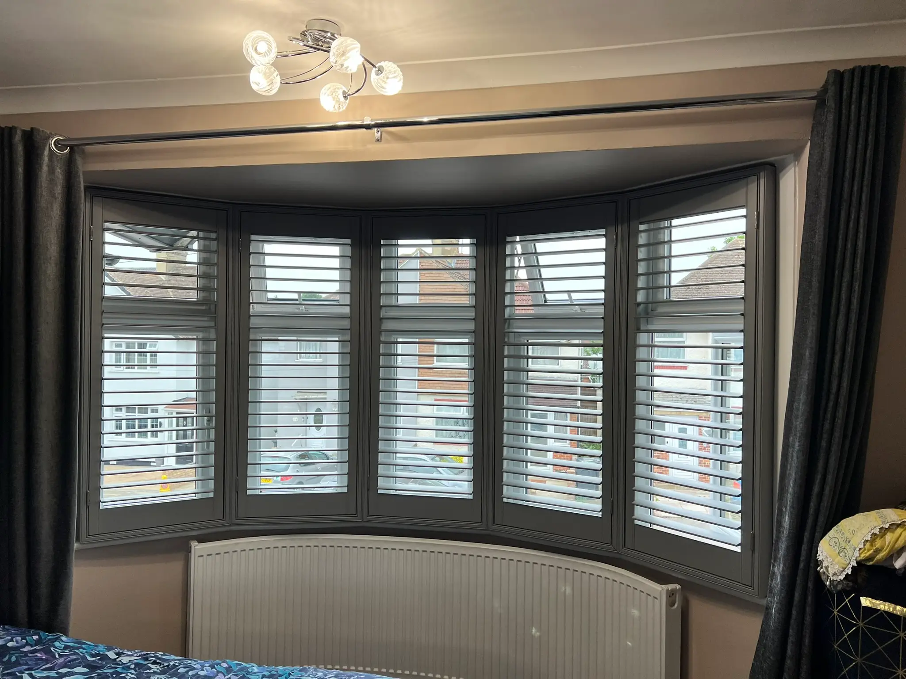
89mm slats
A narrower slat profile for a considered look.
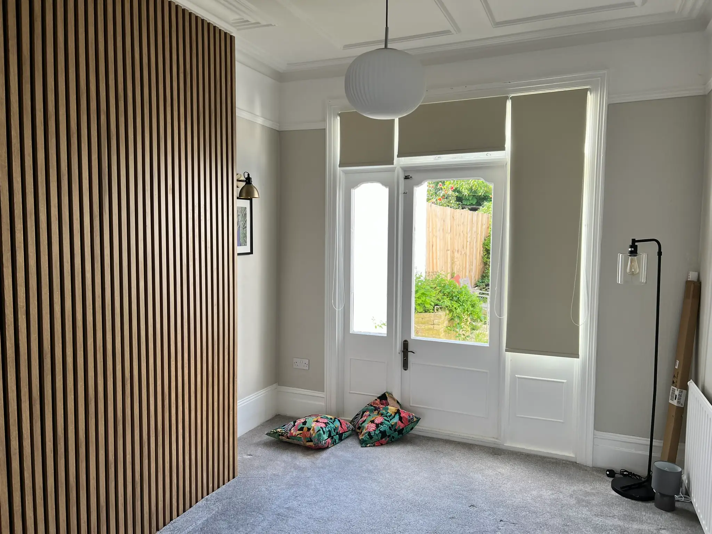
Thoughtful designs for every room and window type.
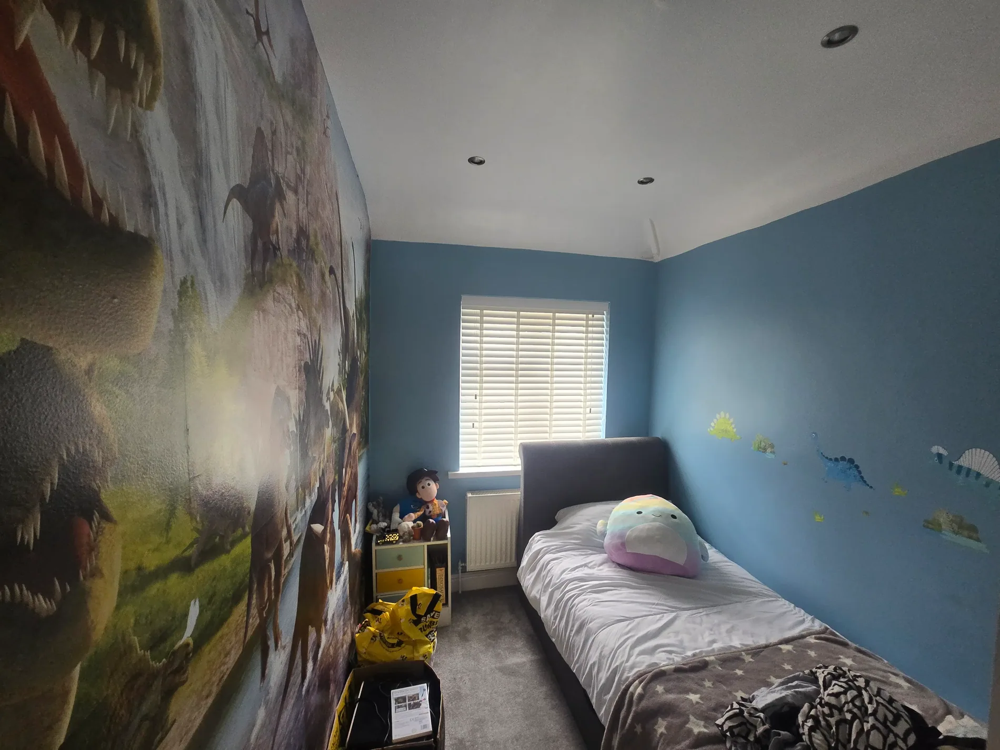
Beautiful detail and considered privacy for every space.
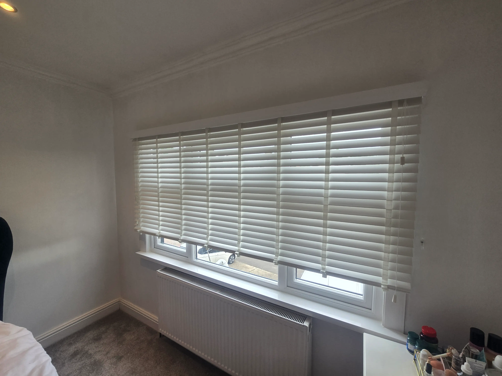
Beautiful fabrics and considered finishing details.
Compare slat widths, fabrics and everyday light control.

A narrower slat profile for a considered look.
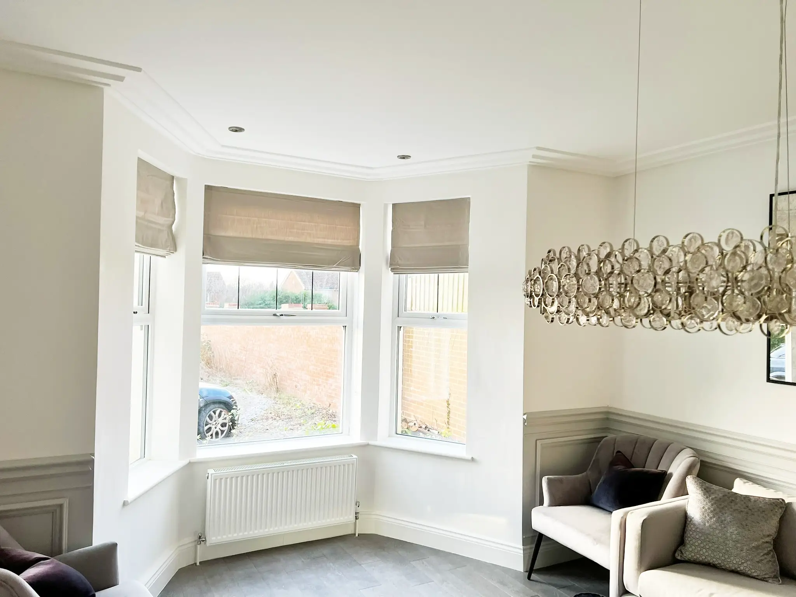
Wider slats with a different visual rhythm.
Thoughtful choices are about the whole room, not just the window.
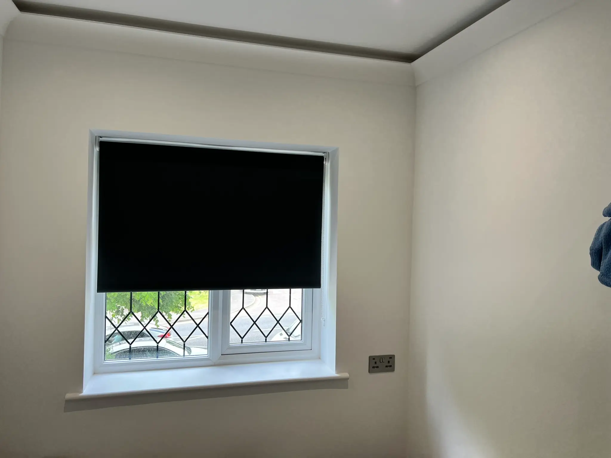
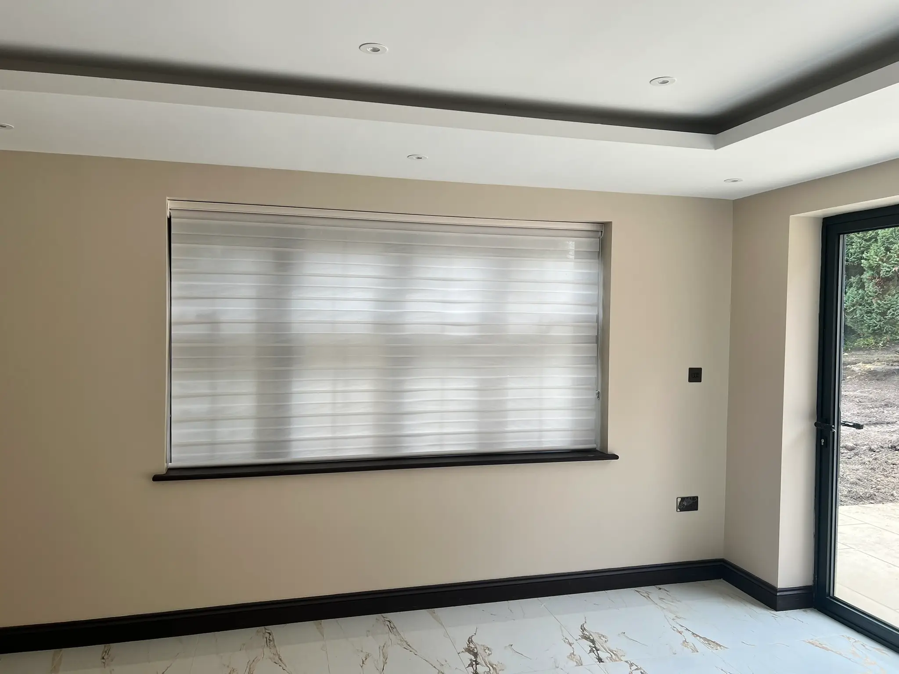
Vertical blinds bring an orderly look to larger windows and glazed areas. Rotate or draw the slats to adjust privacy and daylight.
Browse different window treatments and look more closely at the details.
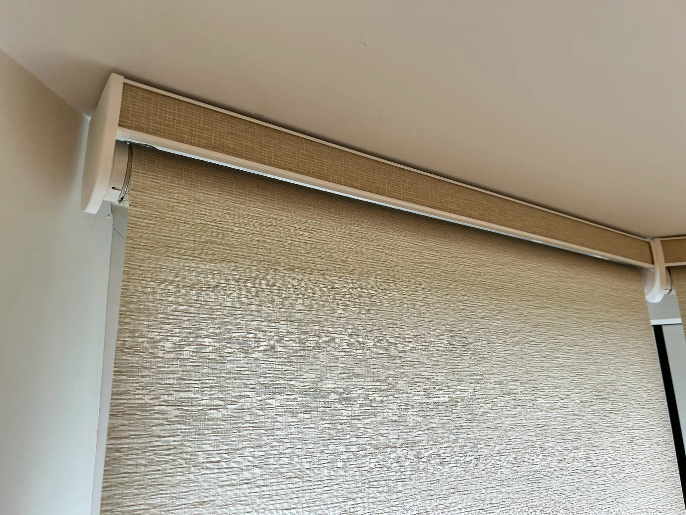
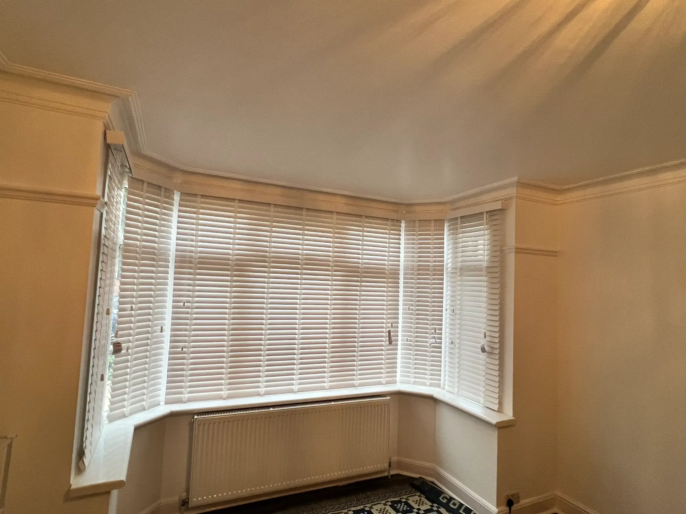
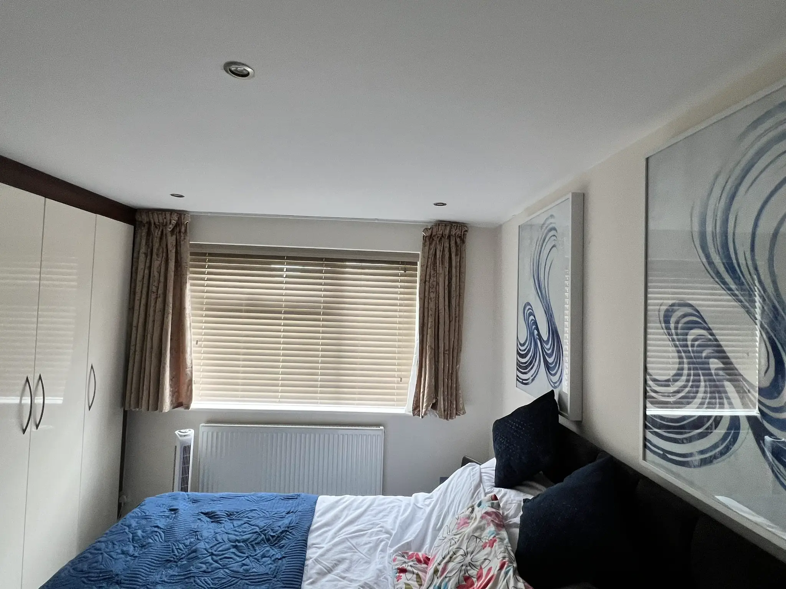
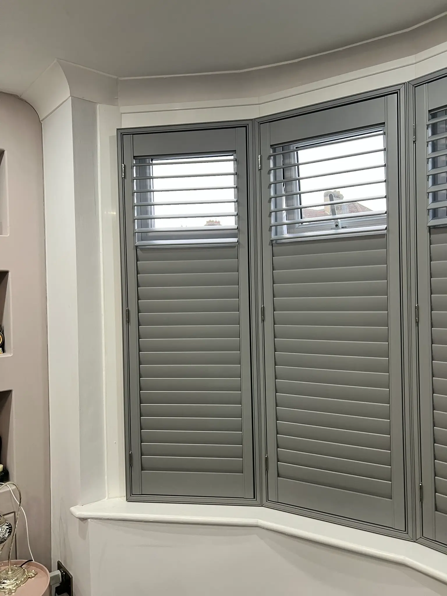
Compare slat widths, fabrics and everyday light control.
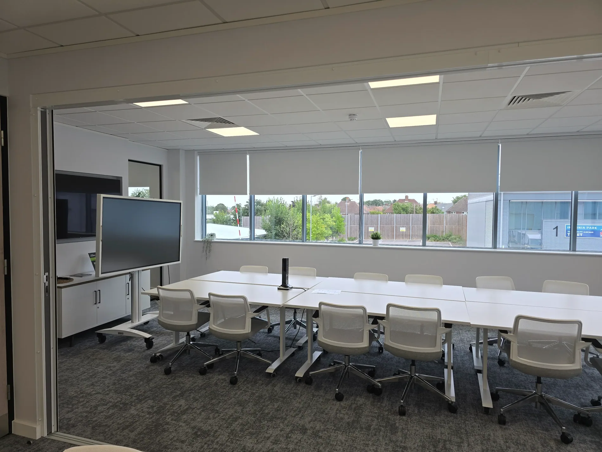
Flexible privacy and precise light control for taller windows. The best result comes from understanding the room, the available product options and what matters to you day to day.
Product specifications should help you make an informed choice, without making the page feel complicated.
89mm and 127mm
Check product-specific fire-retardant specifications
Child safety devices and guidance as applicable
Helpful answers, with product-specific details confirmed during your consultation.
Flexible privacy and precise light control for taller windows. The best choice also depends on window type, dimensions, materials and the way the room is used.
The planned offering is made to measure. Available configurations and fitting methods will depend on the specific product and your windows.
You can arrange an appointment to discuss materials, features, privacy and installation requirements.
Appropriate fitting, operation and safety measures depend on the chosen product. We will provide relevant guidance, including child-safety considerations for applicable blinds.
Explore other styles that could work with your room and window type.
Tell us a little about your space and we can discuss appropriate made-to-measure options.